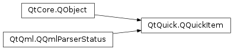

QQuickItem¶
Inherited by: QQuickFramebufferObject, QQuickPaintedItem
Synopsis¶
Functions¶
- def
acceptHoverEvents() - def
acceptTouchEvents() - def
acceptedMouseButtons() - def
activeFocusOnTab() - def
antialiasing() - def
baselineOffset() - def
childAt(x, y) - def
childItems() - def
childrenRect() - def
clip() - def
containmentMask() - def
cursor() - def
filtersChildMouseEvents() - def
flags() - def
forceActiveFocus() - def
forceActiveFocus(reason) - def
grabMouse() - def
grabToImage([targetSize=QSize()]) - def
grabToImage(callback[, targetSize=QSize()]) - def
grabTouchPoints(ids) - def
hasActiveFocus() - def
hasFocus() - def
height() - def
heightValid() - def
implicitHeight() - def
implicitWidth() - def
isAncestorOf(child) - def
isComponentComplete() - def
isEnabled() - def
isFocusScope() - def
isUnderMouse() - def
isVisible() - def
itemTransform(arg__1) - def
keepMouseGrab() - def
keepTouchGrab() - def
mapFromGlobal(point) - def
mapFromItem(item, point) - def
mapFromScene(point) - def
mapRectFromItem(item, rect) - def
mapRectFromScene(rect) - def
mapRectToItem(item, rect) - def
mapRectToScene(rect) - def
mapToGlobal(point) - def
mapToItem(item, point) - def
mapToScene(point) - def
nextItemInFocusChain([forward=true]) - def
opacity() - def
parentItem() - def
polish() - def
position() - def
resetAntialiasing() - def
resetHeight() - def
resetWidth() - def
rotation() - def
scale() - def
scopedFocusItem() - def
setAcceptHoverEvents(enabled) - def
setAcceptTouchEvents(accept) - def
setAcceptedMouseButtons(buttons) - def
setActiveFocusOnTab(arg__1) - def
setAntialiasing(arg__1) - def
setBaselineOffset(arg__1) - def
setClip(arg__1) - def
setContainmentMask(mask) - def
setCursor(cursor) - def
setEnabled(arg__1) - def
setFiltersChildMouseEvents(filter) - def
setFlag(flag[, enabled=true]) - def
setFlags(flags) - def
setFocus(arg__1) - def
setFocus(focus, reason) - def
setHeight(arg__1) - def
setImplicitHeight(arg__1) - def
setImplicitSize(arg__1, arg__2) - def
setImplicitWidth(arg__1) - def
setKeepMouseGrab(arg__1) - def
setKeepTouchGrab(arg__1) - def
setOpacity(arg__1) - def
setParentItem(parent) - def
setPosition(arg__1) - def
setRotation(arg__1) - def
setScale(arg__1) - def
setSize(size) - def
setSmooth(arg__1) - def
setState(arg__1) - def
setTransformOrigin(arg__1) - def
setTransformOriginPoint(arg__1) - def
setVisible(arg__1) - def
setWidth(arg__1) - def
setX(arg__1) - def
setY(arg__1) - def
setZ(arg__1) - def
size() - def
smooth() - def
stackAfter(arg__1) - def
stackBefore(arg__1) - def
state() - def
transformOrigin() - def
transformOriginPoint() - def
ungrabMouse() - def
ungrabTouchPoints() - def
unsetCursor() - def
updateInputMethod([queries=Qt.ImQueryInput]) - def
width() - def
widthValid() - def
window() - def
x() - def
y() - def
z()
Virtual functions¶
- def
boundingRect() - def
childMouseEventFilter(arg__1, arg__2) - def
clipRect() - def
contains(point) - def
dragEnterEvent(arg__1) - def
dragLeaveEvent(arg__1) - def
dragMoveEvent(arg__1) - def
dropEvent(arg__1) - def
focusInEvent(arg__1) - def
focusOutEvent(arg__1) - def
geometryChanged(newGeometry, oldGeometry) - def
hoverEnterEvent(event) - def
hoverLeaveEvent(event) - def
hoverMoveEvent(event) - def
inputMethodEvent(arg__1) - def
inputMethodQuery(query) - def
isTextureProvider() - def
keyPressEvent(event) - def
keyReleaseEvent(event) - def
mouseDoubleClickEvent(event) - def
mouseMoveEvent(event) - def
mousePressEvent(event) - def
mouseReleaseEvent(event) - def
mouseUngrabEvent() - def
releaseResources() - def
textureProvider() - def
touchEvent(event) - def
touchUngrabEvent() - def
updatePaintNode(arg__1, arg__2) - def
updatePolish() - def
wheelEvent(event) - def
windowDeactivateEvent()
Signals¶
- def
activeFocusChanged(arg__1) - def
activeFocusOnTabChanged(arg__1) - def
antialiasingChanged(arg__1) - def
baselineOffsetChanged(arg__1) - def
childrenChanged() - def
childrenRectChanged(arg__1) - def
clipChanged(arg__1) - def
containmentMaskChanged() - def
enabledChanged() - def
focusChanged(arg__1) - def
heightChanged() - def
implicitHeightChanged() - def
implicitWidthChanged() - def
opacityChanged() - def
parentChanged(arg__1) - def
rotationChanged() - def
scaleChanged() - def
smoothChanged(arg__1) - def
stateChanged(arg__1) - def
transformOriginChanged(arg__1) - def
visibleChanged() - def
visibleChildrenChanged() - def
widthChanged() - def
windowChanged(window) - def
xChanged() - def
yChanged() - def
zChanged()
Detailed Description¶
The
PySide2.QtQuick.QQuickItemclass provides the most basic of all visual items in Qt Quick .All visual items in Qt Quick inherit from
PySide2.QtQuick.QQuickItem. Although aPySide2.QtQuick.QQuickIteminstance has no visual appearance, it defines all the attributes that are common across visual items, such as x and y position, width and height, anchoring and key handling support.You can subclass
PySide2.QtQuick.QQuickItemto provide your own custom visual item that inherits these features.
Custom Scene Graph Items¶
All visual QML items are rendered using the scene graph, a low-level, high-performance rendering stack, closely tied to OpenGL. It is possible for subclasses of
PySide2.QtQuick.QQuickItemto add their own custom content into the scene graph by setting theQQuickItem.ItemHasContentsflag and reimplementing theQQuickItem.updatePaintNode()function.Warning
It is crucial that OpenGL operations and interaction with the scene graph happens exclusively on the rendering thread, primarily during the
PySide2.QtQuick.QQuickItem.updatePaintNode()call. The best rule of thumb is to only use classes with the “QSG” prefix inside theQQuickItem.updatePaintNode()function.Note
All classes with QSG prefix should be used solely on the scene graph’s rendering thread. See Scene Graph and Rendering for more information.
Graphics Resource Handling¶
The preferred way to handle cleanup of graphics resources used in the scene graph, is to rely on the automatic cleanup of nodes. A
PySide2.QtQuick.QSGNodereturned fromQQuickItem.updatePaintNode()is automatically deleted on the right thread at the right time. Trees ofPySide2.QtQuick.QSGNodeinstances are managed through the use ofQSGNode.OwnedByParent, which is set by default. So, for the majority of custom scene graph items, no extra work will be required.Implementations that store graphics resources outside the node tree, such as an item implementing
QQuickItem.textureProvider(), will need to take care in cleaning it up correctly depending on how the item is used in QML. The situations to handle are:
- The scene graph is invalidated; This can happen, for instance, if the window is hidden using
QQuickWindow.hide(). If the item class implements aslotnamedinvalidateSceneGraph(), this slot will be called on the rendering thread while the GUI thread is blocked. This is equivalent to connecting toQQuickWindow.sceneGraphInvalidated(). The OpenGL context of this item’s window will be bound when this slot is called. The only exception is if the native OpenGL has been destroyed outside Qt’s control, for instance throughEGL_CONTEXT_LOST.- The item is removed from the scene; If an item is taken out of the scene, for instance because it’s parent was set to
nullor an item in another window, theQQuickItem.releaseResources()will be called on the GUI thread.QQuickWindow.scheduleRenderJob()should be used to schedule cleanup of rendering resources.- The item is deleted; When the destructor if an item runs, it should delete any graphics resources it has. If neither of the two conditions above were already met, the item will be part of a window and it is possible to use
QQuickWindow.scheduleRenderJob()to have them cleaned up. If an implementation ignores the call toQQuickItem.releaseResources(), the item will in many cases no longer have access to aPySide2.QtQuick.QQuickWindowand thus no means of scheduling cleanup.When scheduling cleanup of graphics resources using
QQuickWindow.scheduleRenderJob(), one should use eitherQQuickWindow.BeforeSynchronizingStageorQQuickWindow.AfterSynchronizingStage. The synchronization stage is where the scene graph is changed as a result of changes to the QML tree. If cleanup is scheduled at any other time, it may result in other parts of the scene graph referencing the newly deleted objects as these parts have not been updated.Note
Use of
QObject.deleteLater()to clean up graphics resources is not recommended as this will run at an arbitrary time and it is unknown if there will be an OpenGL context bound when the deletion takes place.
Custom QPainter Items¶
The
PySide2.QtQuick.QQuickItemprovides a subclass,PySide2.QtQuick.QQuickPaintedItem, which allows the users to render content usingPySide2.QtGui.QPainter.Warning
Using
PySide2.QtQuick.QQuickPaintedItemuses an indirect 2D surface to render its content, either using software rasterization or using an OpenGL framebuffer object (FBO), so the rendering is a two-step operation. First rasterize the surface, then draw the surface. Using scene graph API directly is always significantly faster.
Behavior Animations¶
If your Item uses the Behavior type to define animations for property changes, you should always use either
QObject.setProperty(), QQmlProperty(), orQMetaProperty.write()when you need to modify those properties from C++. This ensures that the QML engine knows about the property change. Otherwise, the engine won’t be able to carry out your requested animation. Note that these functions incur a slight performance penalty. For more details, see Accessing Members of a QML Object Type from C++.
-
class
PySide2.QtQuick.QQuickItem([parent=nullptr])¶ Parameters: parent – PySide2.QtQuick.QQuickItemConstructs a
PySide2.QtQuick.QQuickItemwith the givenparent.
-
PySide2.QtQuick.QQuickItem.Flag¶ This enum type is used to specify various item properties.
Constant Description QQuickItem.ItemClipsChildrenToShape Indicates this item should visually clip its children so that they are rendered only within the boundaries of this item. QQuickItem.ItemAcceptsInputMethod Indicates the item supports text input methods. QQuickItem.ItemIsFocusScope Indicates the item is a focus scope. See Keyboard Focus in Qt Quick for more information. QQuickItem.ItemHasContents Indicates the item has visual content and should be rendered by the scene graph. QQuickItem.ItemAcceptsDrops Indicates the item accepts drag and drop events.
-
PySide2.QtQuick.QQuickItem.ItemChange¶ Used in conjunction with
QQuickItem.itemChange()to notify the item about certain types of changes.Constant Description QQuickItem.ItemChildAddedChange A child was added. ItemChangeData::item contains the added child. QQuickItem.ItemChildRemovedChange A child was removed. ItemChangeData::item contains the removed child. QQuickItem.ItemSceneChange The item was added to or removed from a scene. The PySide2.QtQuick.QQuickWindowrendering the scene is specified in using ItemChangeData::window . The window parameter is null when the item is removed from a scene.QQuickItem.ItemVisibleHasChanged The item’s visibility has changed. ItemChangeData::boolValue contains the new visibility. QQuickItem.ItemParentHasChanged The item’s parent has changed. ItemChangeData::item contains the new parent. QQuickItem.ItemOpacityHasChanged The item’s opacity has changed. ItemChangeData::realValue contains the new opacity. QQuickItem.ItemActiveFocusHasChanged The item’s focus has changed. ItemChangeData::boolValue contains whether the item has focus or not. QQuickItem.ItemRotationHasChanged The item’s rotation has changed. ItemChangeData::realValue contains the new rotation. QQuickItem.ItemDevicePixelRatioHasChanged The device pixel ratio of the screen the item is on has changed. ItemChangedData::realValue contains the new device pixel ratio. QQuickItem.ItemAntialiasingHasChanged The antialiasing has changed. The current (boolean) value can be found in QQuickItem.antialiasing.QQuickItem.ItemEnabledHasChanged The item’s enabled state has changed. ItemChangeData::boolValue contains the new enabled state. (since Qt 5.10)
-
PySide2.QtQuick.QQuickItem.TransformOrigin¶ Controls the point about which simple transforms like scale apply.
Constant Description QQuickItem.TopLeft The top-left corner of the item. QQuickItem.Top The center point of the top of the item. QQuickItem.TopRight The top-right corner of the item. QQuickItem.Left The left most point of the vertical middle. QQuickItem.Center The center of the item. QQuickItem.Right The right most point of the vertical middle. QQuickItem.BottomLeft The bottom-left corner of the item. QQuickItem.Bottom The center point of the bottom of the item. QQuickItem.BottomRight The bottom-right corner of the item.
-
PySide2.QtQuick.QQuickItem.acceptHoverEvents()¶ Return type: PySide2.QtCore.boolReturns whether hover events are accepted by this item.
The default value is false.
If this is false, then the item will not receive any hover events through the
PySide2.QtQuick.QQuickItem.hoverEnterEvent(),PySide2.QtQuick.QQuickItem.hoverMoveEvent()andPySide2.QtQuick.QQuickItem.hoverLeaveEvent()functions.
-
PySide2.QtQuick.QQuickItem.acceptTouchEvents()¶ Return type: PySide2.QtCore.boolReturns whether touch events are accepted by this item.
The default value is false.
If this is false, then the item will not receive any touch events through the
PySide2.QtQuick.QQuickItem.touchEvent()function.
-
PySide2.QtQuick.QQuickItem.acceptedMouseButtons()¶ Return type: PySide2.QtCore.Qt.MouseButtonsReturns the mouse buttons accepted by this item.
The default value is
Qt.NoButton; that is, no mouse buttons are accepted.If an item does not accept the mouse button for a particular mouse event, the mouse event will not be delivered to the item and will be delivered to the next item in the item hierarchy instead.
-
PySide2.QtQuick.QQuickItem.activeFocusChanged(arg__1)¶ Parameters: arg__1 – PySide2.QtCore.bool
-
PySide2.QtQuick.QQuickItem.activeFocusOnTab()¶ Return type: PySide2.QtCore.bool
-
PySide2.QtQuick.QQuickItem.activeFocusOnTabChanged(arg__1)¶ Parameters: arg__1 – PySide2.QtCore.bool
-
PySide2.QtQuick.QQuickItem.antialiasing()¶ Return type: PySide2.QtCore.bool
-
PySide2.QtQuick.QQuickItem.antialiasingChanged(arg__1)¶ Parameters: arg__1 – PySide2.QtCore.bool
-
PySide2.QtQuick.QQuickItem.baselineOffset()¶ Return type: PySide2.QtCore.qreal
-
PySide2.QtQuick.QQuickItem.baselineOffsetChanged(arg__1)¶ Parameters: arg__1 – PySide2.QtCore.qreal
-
PySide2.QtQuick.QQuickItem.boundingRect()¶ Return type: PySide2.QtCore.QRectF
-
PySide2.QtQuick.QQuickItem.childAt(x, y)¶ Parameters: - x –
PySide2.QtCore.qreal - y –
PySide2.QtCore.qreal
Return type: Returns the first visible child item found at point (
x,y) within the coordinate system of this item.Returns 0 if there is no such item.
- x –
-
PySide2.QtQuick.QQuickItem.childItems()¶ Return type: Returns the children of this item.
-
PySide2.QtQuick.QQuickItem.childMouseEventFilter(arg__1, arg__2)¶ Parameters: - arg__1 –
PySide2.QtQuick.QQuickItem - arg__2 –
PySide2.QtCore.QEvent
Return type: PySide2.QtCore.boolReimplement this method to filter the mouse events that are received by this item’s children.
This method will only be called if
PySide2.QtQuick.QQuickItem.filtersChildMouseEvents()is true.Return true if the specified
eventshould not be passed onto the specified childitem, and false otherwise.- arg__1 –
-
PySide2.QtQuick.QQuickItem.childrenChanged()¶
-
PySide2.QtQuick.QQuickItem.childrenRect()¶ Return type: PySide2.QtCore.QRectF
-
PySide2.QtQuick.QQuickItem.childrenRectChanged(arg__1)¶ Parameters: arg__1 – PySide2.QtCore.QRectF
-
PySide2.QtQuick.QQuickItem.clip()¶ Return type: PySide2.QtCore.boolSee also
-
PySide2.QtQuick.QQuickItem.clipChanged(arg__1)¶ Parameters: arg__1 – PySide2.QtCore.bool
-
PySide2.QtQuick.QQuickItem.clipRect()¶ Return type: PySide2.QtCore.QRectF
-
PySide2.QtQuick.QQuickItem.containmentMask()¶ Return type: PySide2.QtCore.QObject
-
PySide2.QtQuick.QQuickItem.containmentMaskChanged()¶
-
PySide2.QtQuick.QQuickItem.contains(point)¶ Parameters: point – PySide2.QtCore.QPointFReturn type: PySide2.QtCore.boolReturns true if this item contains
point, which is in local coordinates; returns false otherwise.This function can be overwritten in order to handle point collisions in items with custom shapes. The default implementation checks if the point is inside the item’s bounding rect.
Note that this method is generally used to check whether the item is under the mouse cursor, and for that reason, the implementation of this function should be as light-weight as possible.
-
PySide2.QtQuick.QQuickItem.cursor()¶ Return type: PySide2.QtGui.QCursorReturns the cursor shape for this item.
The mouse cursor will assume this shape when it is over this item, unless an override cursor is set. See the
list of predefined cursor objectsfor a range of useful shapes.If no cursor shape has been set this returns a cursor with the
Qt.ArrowCursorshape, however another cursor shape may be displayed if an overlapping item has a valid cursor.
-
PySide2.QtQuick.QQuickItem.dragEnterEvent(arg__1)¶ Parameters: arg__1 – PySide2.QtGui.QDragEnterEventThis event handler can be reimplemented in a subclass to receive drag-enter events for an item. The event information is provided by the
eventparameter.Drag and drop events are only provided if the
ItemAcceptsDropsflag has been set for this item.See also
Drag Drag and Drop
-
PySide2.QtQuick.QQuickItem.dragLeaveEvent(arg__1)¶ Parameters: arg__1 – PySide2.QtGui.QDragLeaveEventThis event handler can be reimplemented in a subclass to receive drag-leave events for an item. The event information is provided by the
eventparameter.Drag and drop events are only provided if the
ItemAcceptsDropsflag has been set for this item.See also
Drag Drag and Drop
-
PySide2.QtQuick.QQuickItem.dragMoveEvent(arg__1)¶ Parameters: arg__1 – PySide2.QtGui.QDragMoveEventThis event handler can be reimplemented in a subclass to receive drag-move events for an item. The event information is provided by the
eventparameter.Drag and drop events are only provided if the
ItemAcceptsDropsflag has been set for this item.See also
Drag Drag and Drop
-
PySide2.QtQuick.QQuickItem.dropEvent(arg__1)¶ Parameters: arg__1 – PySide2.QtGui.QDropEventThis event handler can be reimplemented in a subclass to receive drop events for an item. The event information is provided by the
eventparameter.Drag and drop events are only provided if the
ItemAcceptsDropsflag has been set for this item.See also
Drag Drag and Drop
-
PySide2.QtQuick.QQuickItem.enabledChanged()¶
-
PySide2.QtQuick.QQuickItem.filtersChildMouseEvents()¶ Return type: PySide2.QtCore.boolReturns whether mouse and touch events of this item’s children should be filtered through this item.
-
PySide2.QtQuick.QQuickItem.flags()¶ Return type: PySide2.QtQuick.QQuickItem.FlagsReturns the item flags for this item.
-
PySide2.QtQuick.QQuickItem.focusChanged(arg__1)¶ Parameters: arg__1 – PySide2.QtCore.bool
-
PySide2.QtQuick.QQuickItem.focusInEvent(arg__1)¶ Parameters: arg__1 – PySide2.QtGui.QFocusEventThis event handler can be reimplemented in a subclass to receive focus-in events for an item. The event information is provided by the
eventparameter.
-
PySide2.QtQuick.QQuickItem.focusOutEvent(arg__1)¶ Parameters: arg__1 – PySide2.QtGui.QFocusEventThis event handler can be reimplemented in a subclass to receive focus-out events for an item. The event information is provided by the
eventparameter.
-
PySide2.QtQuick.QQuickItem.forceActiveFocus(reason)¶ Parameters: reason – PySide2.QtCore.Qt.FocusReasonThis is an overloaded function.
Forces active focus on the item with the given
reason.This method sets focus on the item and ensures that all ancestor FocusScope objects in the object hierarchy are also given
focus().See also
activeFocus()Qt.FocusReason
-
PySide2.QtQuick.QQuickItem.forceActiveFocus() Forces active focus on the item.
This method sets focus on the item and ensures that all ancestor FocusScope objects in the object hierarchy are also given
focus().The reason for the focus change will be
Qt.OtherFocusReason. Use the overloaded method to specify the focus reason to enable better handling of the focus change.See also
activeFocus()
-
PySide2.QtQuick.QQuickItem.geometryChanged(newGeometry, oldGeometry)¶ Parameters: - newGeometry –
PySide2.QtCore.QRectF - oldGeometry –
PySide2.QtCore.QRectF
This function is called to handle this item’s changes in geometry from
oldGeometrytonewGeometry. If the two geometries are the same, it doesn’t do anything.Derived classes must call the base class method within their implementation.
- newGeometry –
-
PySide2.QtQuick.QQuickItem.grabMouse()¶ Grabs the mouse input.
This item will receive all mouse events until
PySide2.QtQuick.QQuickItem.ungrabMouse()is called. Usually this function should not be called, since accepting for example a mouse press event makes sure that the following events are delivered to the item. If an item wants to take over mouse events from the current receiver, it needs to call this function.Warning
This function should be used with caution.
-
PySide2.QtQuick.QQuickItem.grabToImage([targetSize=QSize()])¶ Parameters: targetSize – PySide2.QtCore.QSizeReturn type: PySide2.QtQuick.QSharedPointerGrabs the item into an in-memory image.
The grab happens asynchronously and the signal
QQuickItemGrabResult.ready()is emitted when the grab has been completed.Use
targetSizeto specify the size of the target image. By default, the result will have the same size as item.If the grab could not be initiated, the function returns
null.Note
This function will render the item to an offscreen surface and copy that surface from the GPU’s memory into the CPU’s memory, which can be quite costly. For “live” preview, use layers or ShaderEffectSource .
See also
-
PySide2.QtQuick.QQuickItem.grabToImage(callback[, targetSize=QSize()]) Parameters: - callback –
PySide2.QtQml.QJSValue - targetSize –
PySide2.QtCore.QSize
Return type: PySide2.QtCore.boolOnly visible from QML.
- callback –
-
PySide2.QtQuick.QQuickItem.grabTouchPoints(ids)¶ Parameters: ids – Grabs the touch points specified by
ids.These touch points will be owned by the item until they are released. Alternatively, the grab can be stolen by a filtering item like Flickable. Use
PySide2.QtQuick.QQuickItem.setKeepTouchGrab()to prevent the grab from being stolen.
-
PySide2.QtQuick.QQuickItem.hasActiveFocus()¶ Return type: PySide2.QtCore.bool
-
PySide2.QtQuick.QQuickItem.hasFocus()¶ Return type: PySide2.QtCore.bool
-
PySide2.QtQuick.QQuickItem.height()¶ Return type: PySide2.QtCore.qreal
-
PySide2.QtQuick.QQuickItem.heightChanged()¶
-
PySide2.QtQuick.QQuickItem.heightValid()¶ Return type: PySide2.QtCore.boolReturns whether the height property has been set explicitly.
-
PySide2.QtQuick.QQuickItem.hoverEnterEvent(event)¶ Parameters: event – PySide2.QtGui.QHoverEventThis event handler can be reimplemented in a subclass to receive hover-enter events for an item. The event information is provided by the
eventparameter.Hover events are only provided if
PySide2.QtQuick.QQuickItem.acceptHoverEvents()is true.
-
PySide2.QtQuick.QQuickItem.hoverLeaveEvent(event)¶ Parameters: event – PySide2.QtGui.QHoverEventThis event handler can be reimplemented in a subclass to receive hover-leave events for an item. The event information is provided by the
eventparameter.Hover events are only provided if
PySide2.QtQuick.QQuickItem.acceptHoverEvents()is true.
-
PySide2.QtQuick.QQuickItem.hoverMoveEvent(event)¶ Parameters: event – PySide2.QtGui.QHoverEventThis event handler can be reimplemented in a subclass to receive hover-move events for an item. The event information is provided by the
eventparameter.Hover events are only provided if
PySide2.QtQuick.QQuickItem.acceptHoverEvents()is true.
-
PySide2.QtQuick.QQuickItem.implicitHeight()¶ Return type: PySide2.QtCore.qreal
-
PySide2.QtQuick.QQuickItem.implicitHeightChanged()¶
-
PySide2.QtQuick.QQuickItem.implicitWidth()¶ Return type: PySide2.QtCore.qrealReturns the width of the item that is implied by other properties that determine the content.
-
PySide2.QtQuick.QQuickItem.implicitWidthChanged()¶
-
PySide2.QtQuick.QQuickItem.inputMethodEvent(arg__1)¶ Parameters: arg__1 – PySide2.QtGui.QInputMethodEventThis event handler can be reimplemented in a subclass to receive input method events for an item. The event information is provided by the
eventparameter.
-
PySide2.QtQuick.QQuickItem.inputMethodQuery(query)¶ Parameters: query – PySide2.QtCore.Qt.InputMethodQueryReturn type: object This method is only relevant for input items.
If this item is an input item, this method should be reimplemented to return the relevant input method flags for the given
query.See also
QWidget.inputMethodQuery()
-
PySide2.QtQuick.QQuickItem.isAncestorOf(child)¶ Parameters: child – PySide2.QtQuick.QQuickItemReturn type: PySide2.QtCore.boolReturns
trueif this item is an ancestor ofchild(i.e., if this item ischild‘s parent, or one ofchild‘s parent’s ancestors).
-
PySide2.QtQuick.QQuickItem.isComponentComplete()¶ Return type: PySide2.QtCore.boolReturns true if construction of the QML component is complete; otherwise returns false.
It is often desirable to delay some processing until the component is completed.
See also
PySide2.QtQuick.QQuickItem.componentComplete()
-
PySide2.QtQuick.QQuickItem.isEnabled()¶ Return type: PySide2.QtCore.bool
-
PySide2.QtQuick.QQuickItem.isFocusScope()¶ Return type: PySide2.QtCore.boolReturns true if this item is a focus scope, and false otherwise.
-
PySide2.QtQuick.QQuickItem.isTextureProvider()¶ Return type: PySide2.QtCore.boolReturns true if this item is a texture provider. The default implementation returns false.
This function can be called from any thread.
-
PySide2.QtQuick.QQuickItem.isUnderMouse()¶ Return type: PySide2.QtCore.bool
-
PySide2.QtQuick.QQuickItem.isVisible()¶ Return type: PySide2.QtCore.bool
-
PySide2.QtQuick.QQuickItem.itemTransform(arg__1)¶ Parameters: arg__1 – PySide2.QtQuick.QQuickItemReturn type: PyTuple
-
PySide2.QtQuick.QQuickItem.keepMouseGrab()¶ Return type: PySide2.QtCore.boolReturns whether mouse input should exclusively remain with this item.
-
PySide2.QtQuick.QQuickItem.keepTouchGrab()¶ Return type: PySide2.QtCore.boolReturns whether the touch points grabbed by this item should exclusively remain with this item.
-
PySide2.QtQuick.QQuickItem.keyPressEvent(event)¶ Parameters: event – PySide2.QtGui.QKeyEventThis event handler can be reimplemented in a subclass to receive key press events for an item. The event information is provided by the
eventparameter.
-
PySide2.QtQuick.QQuickItem.keyReleaseEvent(event)¶ Parameters: event – PySide2.QtGui.QKeyEventThis event handler can be reimplemented in a subclass to receive key release events for an item. The event information is provided by the
eventparameter.
-
PySide2.QtQuick.QQuickItem.mapFromGlobal(point)¶ Parameters: point – PySide2.QtCore.QPointFReturn type: PySide2.QtCore.QPointFMaps the given
pointin the global screen coordinate system to the equivalent point within this item’s coordinate system, and returns the mapped coordinate.For example, this may be helpful to add a popup to a Qt Quick component.
Note
Window positioning is done by the window manager and this value is treated only as a hint. So, the resulting window position may differ from what is expected.
-
PySide2.QtQuick.QQuickItem.mapFromItem(item, point)¶ Parameters: - item –
PySide2.QtQuick.QQuickItem - point –
PySide2.QtCore.QPointF
Return type: Maps the given
pointinitem‘s coordinate system to the equivalent point within this item’s coordinate system, and returns the mapped coordinate.If
itemis 0, this mapspointfrom the coordinate system of the scene.- item –
-
PySide2.QtQuick.QQuickItem.mapFromScene(point)¶ Parameters: point – PySide2.QtCore.QPointFReturn type: PySide2.QtCore.QPointFMaps the given
pointin the scene’s coordinate system to the equivalent point within this item’s coordinate system, and returns the mapped coordinate.
-
PySide2.QtQuick.QQuickItem.mapRectFromItem(item, rect)¶ Parameters: - item –
PySide2.QtQuick.QQuickItem - rect –
PySide2.QtCore.QRectF
Return type: Maps the given
rectinitem‘s coordinate system to the equivalent rectangular area within this item’s coordinate system, and returns the mapped rectangle value.If
itemis 0, this mapsrectfrom the coordinate system of the scene.- item –
-
PySide2.QtQuick.QQuickItem.mapRectFromScene(rect)¶ Parameters: rect – PySide2.QtCore.QRectFReturn type: PySide2.QtCore.QRectFMaps the given
rectin the scene’s coordinate system to the equivalent rectangular area within this item’s coordinate system, and returns the mapped rectangle value.
-
PySide2.QtQuick.QQuickItem.mapRectToItem(item, rect)¶ Parameters: - item –
PySide2.QtQuick.QQuickItem - rect –
PySide2.QtCore.QRectF
Return type: Maps the given
rectin this item’s coordinate system to the equivalent rectangular area withinitem‘s coordinate system, and returns the mapped rectangle value.If
itemis 0, this mapsrectto the coordinate system of the scene.- item –
-
PySide2.QtQuick.QQuickItem.mapRectToScene(rect)¶ Parameters: rect – PySide2.QtCore.QRectFReturn type: PySide2.QtCore.QRectFMaps the given
rectin this item’s coordinate system to the equivalent rectangular area within the scene’s coordinate system, and returns the mapped rectangle value.
-
PySide2.QtQuick.QQuickItem.mapToGlobal(point)¶ Parameters: point – PySide2.QtCore.QPointFReturn type: PySide2.QtCore.QPointFMaps the given
pointin this item’s coordinate system to the equivalent point within global screen coordinate system, and returns the mapped coordinate.For example, this may be helpful to add a popup to a Qt Quick component.
Note
Window positioning is done by the window manager and this value is treated only as a hint. So, the resulting window position may differ from what is expected.
-
PySide2.QtQuick.QQuickItem.mapToItem(item, point)¶ Parameters: - item –
PySide2.QtQuick.QQuickItem - point –
PySide2.QtCore.QPointF
Return type: Maps the given
pointin this item’s coordinate system to the equivalent point withinitem‘s coordinate system, and returns the mapped coordinate.If
itemis 0, this mapspointto the coordinate system of the scene.- item –
-
PySide2.QtQuick.QQuickItem.mapToScene(point)¶ Parameters: point – PySide2.QtCore.QPointFReturn type: PySide2.QtCore.QPointFMaps the given
pointin this item’s coordinate system to the equivalent point within the scene’s coordinate system, and returns the mapped coordinate.
-
PySide2.QtQuick.QQuickItem.mouseDoubleClickEvent(event)¶ Parameters: event – PySide2.QtGui.QMouseEventThis event handler can be reimplemented in a subclass to receive mouse double-click events for an item. The event information is provided by the
eventparameter.
-
PySide2.QtQuick.QQuickItem.mouseMoveEvent(event)¶ Parameters: event – PySide2.QtGui.QMouseEventThis event handler can be reimplemented in a subclass to receive mouse move events for an item. The event information is provided by the
eventparameter.
-
PySide2.QtQuick.QQuickItem.mousePressEvent(event)¶ Parameters: event – PySide2.QtGui.QMouseEventThis event handler can be reimplemented in a subclass to receive mouse press events for an item. The event information is provided by the
eventparameter.
-
PySide2.QtQuick.QQuickItem.mouseReleaseEvent(event)¶ Parameters: event – PySide2.QtGui.QMouseEventThis event handler can be reimplemented in a subclass to receive mouse release events for an item. The event information is provided by the
eventparameter.
-
PySide2.QtQuick.QQuickItem.mouseUngrabEvent()¶ This event handler can be reimplemented in a subclass to be notified when a mouse ungrab event has occurred on this item.
-
PySide2.QtQuick.QQuickItem.nextItemInFocusChain([forward=true])¶ Parameters: forward – PySide2.QtCore.boolReturn type: PySide2.QtQuick.QQuickItemReturns the item in the focus chain which is next to this item. If
forwardistrue, or not supplied, it is the next item in the forwards direction. Ifforwardisfalse, it is the next item in the backwards direction.
-
PySide2.QtQuick.QQuickItem.opacity()¶ Return type: PySide2.QtCore.qreal
-
PySide2.QtQuick.QQuickItem.opacityChanged()¶
-
PySide2.QtQuick.QQuickItem.parentChanged(arg__1)¶ Parameters: arg__1 – PySide2.QtQuick.QQuickItem
-
PySide2.QtQuick.QQuickItem.parentItem()¶ Return type: PySide2.QtQuick.QQuickItem
-
PySide2.QtQuick.QQuickItem.polish()¶ Schedules a polish event for this item.
When the scene graph processes the request, it will call
PySide2.QtQuick.QQuickItem.updatePolish()on this item.
-
PySide2.QtQuick.QQuickItem.position()¶ Return type: PySide2.QtCore.QPointF
-
PySide2.QtQuick.QQuickItem.releaseResources()¶ This function is called when an item should release graphics resources which are not already managed by the nodes returned from
QQuickItem.updatePaintNode().This happens when the item is about to be removed from the window it was previously rendering to. The item is guaranteed to have a
PySide2.QtQuick.QQuickItem.window()when the function is called.The function is called on the GUI thread and the state of the rendering thread, when it is used, is unknown. Objects should not be deleted directly, but instead scheduled for cleanup using
QQuickWindow.scheduleRenderJob().See also
Graphics Resource Handling
-
PySide2.QtQuick.QQuickItem.resetAntialiasing()¶
-
PySide2.QtQuick.QQuickItem.resetHeight()¶
-
PySide2.QtQuick.QQuickItem.resetWidth()¶
-
PySide2.QtQuick.QQuickItem.rotation()¶ Return type: PySide2.QtCore.qreal
-
PySide2.QtQuick.QQuickItem.rotationChanged()¶
-
PySide2.QtQuick.QQuickItem.scale()¶ Return type: PySide2.QtCore.qreal
-
PySide2.QtQuick.QQuickItem.scaleChanged()¶
-
PySide2.QtQuick.QQuickItem.scopedFocusItem()¶ Return type: PySide2.QtQuick.QQuickItemIf this item is a focus scope, this returns the item in its focus chain that currently has focus.
Returns 0 if this item is not a focus scope.
-
PySide2.QtQuick.QQuickItem.setAcceptHoverEvents(enabled)¶ Parameters: enabled – PySide2.QtCore.boolIf
enabledis true, this sets the item to accept hover events; otherwise, hover events are not accepted by this item.
-
PySide2.QtQuick.QQuickItem.setAcceptTouchEvents(accept)¶ Parameters: accept – PySide2.QtCore.boolIf
enabledis true, this sets the item to accept touch events; otherwise, touch events are not accepted by this item.
-
PySide2.QtQuick.QQuickItem.setAcceptedMouseButtons(buttons)¶ Parameters: buttons – PySide2.QtCore.Qt.MouseButtonsSets the mouse buttons accepted by this item to
buttons.
-
PySide2.QtQuick.QQuickItem.setActiveFocusOnTab(arg__1)¶ Parameters: arg__1 – PySide2.QtCore.bool
-
PySide2.QtQuick.QQuickItem.setAntialiasing(arg__1)¶ Parameters: arg__1 – PySide2.QtCore.bool
-
PySide2.QtQuick.QQuickItem.setBaselineOffset(arg__1)¶ Parameters: arg__1 – PySide2.QtCore.qreal
-
PySide2.QtQuick.QQuickItem.setClip(arg__1)¶ Parameters: arg__1 – PySide2.QtCore.boolSee also
-
PySide2.QtQuick.QQuickItem.setContainmentMask(mask)¶ Parameters: mask – PySide2.QtCore.QObject
-
PySide2.QtQuick.QQuickItem.setCursor(cursor)¶ Parameters: cursor – PySide2.QtGui.QCursorSets the
cursorshape for this item.
-
PySide2.QtQuick.QQuickItem.setEnabled(arg__1)¶ Parameters: arg__1 – PySide2.QtCore.bool
-
PySide2.QtQuick.QQuickItem.setFiltersChildMouseEvents(filter)¶ Parameters: filter – PySide2.QtCore.boolSets whether mouse and touch events of this item’s children should be filtered through this item.
If
filteris true,PySide2.QtQuick.QQuickItem.childMouseEventFilter()will be called when a mouse event is triggered for a child item.
-
PySide2.QtQuick.QQuickItem.setFlag(flag[, enabled=true])¶ Parameters: - flag –
PySide2.QtQuick.QQuickItem.Flag - enabled –
PySide2.QtCore.bool
Enables the specified
flagfor this item ifenabledis true; ifenabledis false, the flag is disabled.These provide various hints for the item; for example, the
ItemClipsChildrenToShapeflag indicates that all children of this item should be clipped to fit within the item area.- flag –
-
PySide2.QtQuick.QQuickItem.setFlags(flags)¶ Parameters: flags – PySide2.QtQuick.QQuickItem.FlagsEnables the specified
flagsfor this item.
-
PySide2.QtQuick.QQuickItem.setFocus(focus, reason)¶ Parameters: - focus –
PySide2.QtCore.bool - reason –
PySide2.QtCore.Qt.FocusReason
- focus –
-
PySide2.QtQuick.QQuickItem.setFocus(arg__1) Parameters: arg__1 – PySide2.QtCore.bool
-
PySide2.QtQuick.QQuickItem.setHeight(arg__1)¶ Parameters: arg__1 – PySide2.QtCore.qrealSee also
-
PySide2.QtQuick.QQuickItem.setImplicitHeight(arg__1)¶ Parameters: arg__1 – PySide2.QtCore.qreal
-
PySide2.QtQuick.QQuickItem.setImplicitSize(arg__1, arg__2)¶ Parameters: - arg__1 –
PySide2.QtCore.qreal - arg__2 –
PySide2.QtCore.qreal
- arg__1 –
-
PySide2.QtQuick.QQuickItem.setImplicitWidth(arg__1)¶ Parameters: arg__1 – PySide2.QtCore.qreal
-
PySide2.QtQuick.QQuickItem.setKeepMouseGrab(arg__1)¶ Parameters: arg__1 – PySide2.QtCore.boolSets whether the mouse input should remain exclusively with this item.
This is useful for items that wish to grab and keep mouse interaction following a predefined gesture. For example, an item that is interested in horizontal mouse movement may set
PySide2.QtQuick.QQuickItem.keepMouseGrab()to true once a threshold has been exceeded. OncePySide2.QtQuick.QQuickItem.keepMouseGrab()has been set to true, filtering items will not react to mouse events.If
keepis false, a filtering item may steal the grab. For example, Flickable may attempt to steal a mouse grab if it detects that the user has begun to move the viewport.
-
PySide2.QtQuick.QQuickItem.setKeepTouchGrab(arg__1)¶ Parameters: arg__1 – PySide2.QtCore.boolSets whether the touch points grabbed by this item should remain exclusively with this item.
This is useful for items that wish to grab and keep specific touch points following a predefined gesture. For example, an item that is interested in horizontal touch point movement may set to true once a threshold has been exceeded. Once has been set to true, filtering items will not react to the relevant touch points.
If
keepis false, a filtering item may steal the grab. For example, Flickable may attempt to steal a touch point grab if it detects that the user has begun to move the viewport.
-
PySide2.QtQuick.QQuickItem.setOpacity(arg__1)¶ Parameters: arg__1 – PySide2.QtCore.qrealSee also
-
PySide2.QtQuick.QQuickItem.setParentItem(parent)¶ Parameters: parent – PySide2.QtQuick.QQuickItem
-
PySide2.QtQuick.QQuickItem.setPosition(arg__1)¶ Parameters: arg__1 – PySide2.QtCore.QPointF
-
PySide2.QtQuick.QQuickItem.setRotation(arg__1)¶ Parameters: arg__1 – PySide2.QtCore.qreal
-
PySide2.QtQuick.QQuickItem.setScale(arg__1)¶ Parameters: arg__1 – PySide2.QtCore.qrealSee also
-
PySide2.QtQuick.QQuickItem.setSize(size)¶ Parameters: size – PySide2.QtCore.QSizeFSets the size of the item to
size.
-
PySide2.QtQuick.QQuickItem.setSmooth(arg__1)¶ Parameters: arg__1 – PySide2.QtCore.boolSee also
-
PySide2.QtQuick.QQuickItem.setState(arg__1)¶ Parameters: arg__1 – unicode See also
-
PySide2.QtQuick.QQuickItem.setTransformOrigin(arg__1)¶ Parameters: arg__1 – PySide2.QtQuick.QQuickItem.TransformOrigin
-
PySide2.QtQuick.QQuickItem.setTransformOriginPoint(arg__1)¶ Parameters: arg__1 – PySide2.QtCore.QPointF
-
PySide2.QtQuick.QQuickItem.setVisible(arg__1)¶ Parameters: arg__1 – PySide2.QtCore.bool
-
PySide2.QtQuick.QQuickItem.setWidth(arg__1)¶ Parameters: arg__1 – PySide2.QtCore.qrealSee also
-
PySide2.QtQuick.QQuickItem.setX(arg__1)¶ Parameters: arg__1 – PySide2.QtCore.qrealSee also
-
PySide2.QtQuick.QQuickItem.setY(arg__1)¶ Parameters: arg__1 – PySide2.QtCore.qrealSee also
-
PySide2.QtQuick.QQuickItem.setZ(arg__1)¶ Parameters: arg__1 – PySide2.QtCore.qrealSee also
-
PySide2.QtQuick.QQuickItem.size()¶ Return type: PySide2.QtCore.QSizeFReturns the size of the item.
-
PySide2.QtQuick.QQuickItem.smooth()¶ Return type: PySide2.QtCore.bool
-
PySide2.QtQuick.QQuickItem.smoothChanged(arg__1)¶ Parameters: arg__1 – PySide2.QtCore.bool
-
PySide2.QtQuick.QQuickItem.stackAfter(arg__1)¶ Parameters: arg__1 – PySide2.QtQuick.QQuickItemMoves the specified
siblingitem to the index after this item within the list of children. The order of children affects both the visual stacking order and tab focus navigation order.Assuming the z values of both items are the same, this will cause
siblingto be rendered below this item.If both items have
PySide2.QtQuick.QQuickItem.activeFocusOnTab()set totrue, this will also cause the tab focus order to change, withsiblingreceiving focus before this item.The given
siblingmust be a sibling of this item; that is, they must have the same immediatePySide2.QtCore.QObject.parent().See also
-
PySide2.QtQuick.QQuickItem.stackBefore(arg__1)¶ Parameters: arg__1 – PySide2.QtQuick.QQuickItemMoves the specified
siblingitem to the index before this item within the list of children. The order of children affects both the visual stacking order and tab focus navigation order.Assuming the z values of both items are the same, this will cause
siblingto be rendered above this item.If both items have
PySide2.QtQuick.QQuickItem.activeFocusOnTab()set totrue, this will also cause the tab focus order to change, withsiblingreceiving focus after this item.The given
siblingmust be a sibling of this item; that is, they must have the same immediatePySide2.QtCore.QObject.parent().See also
-
PySide2.QtQuick.QQuickItem.state()¶ Return type: unicode
-
PySide2.QtQuick.QQuickItem.stateChanged(arg__1)¶ Parameters: arg__1 – unicode
-
PySide2.QtQuick.QQuickItem.textureProvider()¶ Return type: PySide2.QtQuick.QSGTextureProviderReturns the texture provider for an item. The default implementation returns 0.
This function may only be called on the rendering thread.
-
PySide2.QtQuick.QQuickItem.touchEvent(event)¶ Parameters: event – PySide2.QtGui.QTouchEventThis event handler can be reimplemented in a subclass to receive touch events for an item. The event information is provided by the
eventparameter.
-
PySide2.QtQuick.QQuickItem.touchUngrabEvent()¶ This event handler can be reimplemented in a subclass to be notified when a touch ungrab event has occurred on this item.
-
PySide2.QtQuick.QQuickItem.transformOrigin()¶ Return type: PySide2.QtQuick.QQuickItem.TransformOrigin
-
PySide2.QtQuick.QQuickItem.transformOriginChanged(arg__1)¶ Parameters: arg__1 – PySide2.QtQuick.QQuickItem.TransformOrigin
-
PySide2.QtQuick.QQuickItem.transformOriginPoint()¶ Return type: PySide2.QtCore.QPointF
-
PySide2.QtQuick.QQuickItem.ungrabMouse()¶ Releases the mouse grab following a call to
PySide2.QtQuick.QQuickItem.grabMouse().Note that this function should only be called when the item wants to stop handling further events. There is no need to call this function after a release or cancel event since no future events will be received in any case. No move or release events will be delivered after this function was called.
-
PySide2.QtQuick.QQuickItem.ungrabTouchPoints()¶ Ungrabs the touch points owned by this item.
Note
there is hardly any reason to call this function. It should only be called when an item does not want to receive any further events, so no move or release events will be delivered after calling this function.
-
PySide2.QtQuick.QQuickItem.unsetCursor()¶ Clears the cursor shape for this item.
-
PySide2.QtQuick.QQuickItem.update()¶ Schedules a call to
PySide2.QtQuick.QQuickItem.updatePaintNode()for this item.The call to
QQuickItem.updatePaintNode()will always happen if the item is showing in aPySide2.QtQuick.QQuickWindow.Only items which specify
QQuickItem.ItemHasContentsare allowed to call .
-
PySide2.QtQuick.QQuickItem.updateInputMethod([queries=Qt.ImQueryInput])¶ Parameters: queries – PySide2.QtCore.Qt.InputMethodQueriesNotify input method on updated query values if needed.
queriesindicates the changed attributes.
-
PySide2.QtQuick.QQuickItem.updatePaintNode(arg__1, arg__2)¶ Parameters: - arg__1 –
PySide2.QtQuick.QSGNode - arg__2 –
PySide2.QtQuick.QQuickItem::UpdatePaintNodeData
Return type: Called on the render thread when it is time to sync the state of the item with the scene graph.
The function is called as a result of
QQuickItem.update(), if the user has set theQQuickItem.ItemHasContentsflag on the item.The function should return the root of the scene graph subtree for this item. Most implementations will return a single
PySide2.QtQuick.QSGGeometryNodecontaining the visual representation of this item.oldNodeis the node that was returned the last time the function was called.updatePaintNodeDataprovides a pointer to thePySide2.QtQuick.QSGTransformNodeassociated with thisPySide2.QtQuick.QQuickItem.QSGNode *MyItem::updatePaintNode(QSGNode *node, UpdatePaintNodeData *) { QSGSimpleRectNode *n = static_cast<QSGSimpleRectNode *>(node); if (!n) { n = new QSGSimpleRectNode(); n->setColor(Qt::red); } n->setRect(boundingRect()); return n; }The main thread is blocked while this function is executed so it is safe to read values from the
PySide2.QtQuick.QQuickIteminstance and other objects in the main thread.If no call to result in actual scene graph changes, like
QSGNode.markDirty()or adding and removing nodes, then the underlying implementation may decide to not render the scene again as the visual outcome is identical.Warning
It is crucial that OpenGL operations and interaction with the scene graph happens exclusively on the render thread, primarily during the call. The best rule of thumb is to only use classes with the “QSG” prefix inside the function.
Warning
This function is called on the render thread. This means any QObjects or thread local storage that is created will have affinity to the render thread, so apply caution when doing anything other than rendering in this function. Similarly for signals, these will be emitted on the render thread and will thus often be delivered via queued connections.
Note
All classes with QSG prefix should be used solely on the scene graph’s rendering thread. See Scene Graph and Rendering for more information.
See also
QSGMaterialQSGSimpleMaterialPySide2.QtQuick.QSGGeometryNodePySide2.QtQuick.QSGGeometryQSGFlatColorMaterialQSGTextureMaterialQSGNode.markDirty()Graphics Resource Handling- arg__1 –
-
PySide2.QtQuick.QQuickItem.updatePolish()¶ This function should perform any layout as required for this item.
When
PySide2.QtQuick.QQuickItem.polish()is called, the scene graph schedules a polish event for this item. When the scene graph is ready to render this item, it calls to do any item layout as required before it renders the next frame.
-
PySide2.QtQuick.QQuickItem.visibleChanged()¶
-
PySide2.QtQuick.QQuickItem.visibleChildrenChanged()¶
-
PySide2.QtQuick.QQuickItem.wheelEvent(event)¶ Parameters: event – PySide2.QtGui.QWheelEventThis event handler can be reimplemented in a subclass to receive wheel events for an item. The event information is provided by the
eventparameter.
-
PySide2.QtQuick.QQuickItem.width()¶ Return type: PySide2.QtCore.qreal
-
PySide2.QtQuick.QQuickItem.widthChanged()¶
-
PySide2.QtQuick.QQuickItem.widthValid()¶ Return type: PySide2.QtCore.boolReturns whether the width property has been set explicitly.
-
PySide2.QtQuick.QQuickItem.window()¶ Return type: PySide2.QtQuick.QQuickWindowReturns the window in which this item is rendered.
The item does not have a window until it has been assigned into a scene. The
PySide2.QtQuick.QQuickItem.windowChanged()signal provides a notification both when the item is entered into a scene and when it is removed from a scene.
-
PySide2.QtQuick.QQuickItem.windowChanged(window)¶ Parameters: window – PySide2.QtQuick.QQuickWindow
-
PySide2.QtQuick.QQuickItem.windowDeactivateEvent()¶
-
PySide2.QtQuick.QQuickItem.x()¶ Return type: PySide2.QtCore.qrealSee also
-
PySide2.QtQuick.QQuickItem.xChanged()¶
-
PySide2.QtQuick.QQuickItem.y()¶ Return type: PySide2.QtCore.qrealSee also
-
PySide2.QtQuick.QQuickItem.yChanged()¶
-
PySide2.QtQuick.QQuickItem.z()¶ Return type: PySide2.QtCore.qrealSee also
-
PySide2.QtQuick.QQuickItem.zChanged()¶
© 2018 The Qt Company Ltd. Documentation contributions included herein are the copyrights of their respective owners. The documentation provided herein is licensed under the terms of the GNU Free Documentation License version 1.3 as published by the Free Software Foundation. Qt and respective logos are trademarks of The Qt Company Ltd. in Finland and/or other countries worldwide. All other trademarks are property of their respective owners.